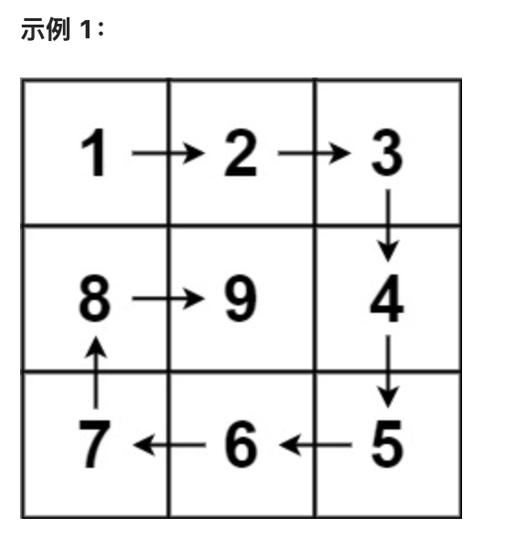

主题：数组
总结：数组的题目主要需要关注循环的边界，注意边界条件
经典题目：
有序数组的平方：
力扣：977有序数组的平方
解题方法：双指针法
题目要求：
给你一个递增数组nums，需要你返回一个递增的数组，里面的树是原数组元素的平方
def sortedSquares(nums):
res = []
left = 0
right = len(nums) - 1
# 注意边界条件
while left <= right:
left_res = nums[left] ** 2
right_res = nums[right] ** 2
if left_res < right_res:
res.append(right_res)
right -= 1
else:
res.append(left_res)
left += 1
# 因为这个时候res是递减的，所以需要反转数组
return res[::-1]
长度最小的子数组
力扣：209长度最小的子数组
解题方法：滑动窗口 （本质还是双指针）
题目要求：
给你一个数组nums，和一个数值target，需要你返回一个和大于等于target的最小连续子数组的长度
重点： ❗️
- 注意题目要求的是连续子数组，所以不能改变原来数组的排列
- 如果使用暴力方法会超出时间限制
- 最初实现滑动窗口的时候会每一次重新计算sum，但是可以利用一个变量来记录窗口的数值和
def minSubArraryLen(nums, target):
# 极端情况
if sum(nums) < target:
return 0
left_win = 0
right_win = 0
# 利用win_sum来记录窗口和
win_sum = 0
res = float("inf")
# 将两个窗口的边界更新分开
while right_win < len(nums):
win_sum += nums[right_win]
# 注意边界条件
while win_sum >= target and left_win <= right_win:
res = min(res, right_win - left_win + 1)
win_sum -= nums[left_win]
left_win += 1
right_win += 1
return res
螺旋矩阵
力扣59. 螺旋矩阵II
解题方法：没有技巧，主要是要确定循环不变量 ❗️❗️❗️
题目要求：按照如图的顺序生成矩阵

def generateMatrix(n):
res = [[0 for _ in range(n)] for _ in range(n)]
startx = 0
starty = 0
val = 1
loops = n // 2
# 注意每一次的循环不变量
for l in range(loops):
for i in range(starty, n - l - 1):
res[startx][i] = val
val += 1
for i in range(startx, n - l - 1):
res[i][n-l-1] = val
val += 1
for i in range(n - l - 1, starty, -1):
res[n-l-1][i] = val
val += 1
for i in range(n - l - 1, startx, -1):
res[i][starty] = val
val += 1
startx += 1
starty += 1
if n % 2 != 0:
res[startx][starty] = val
return res